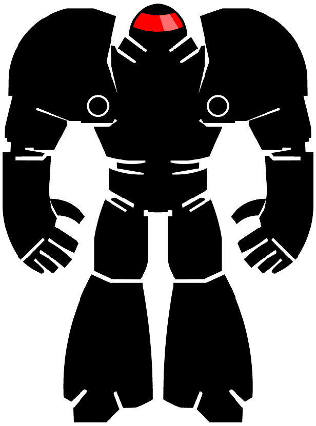
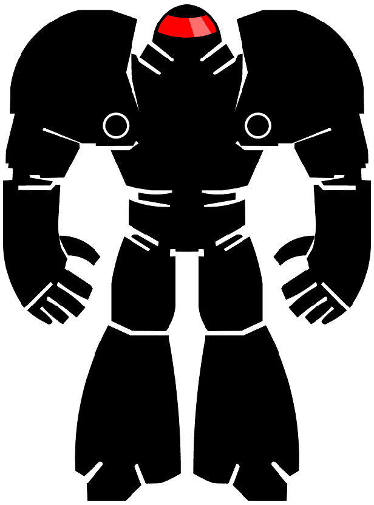
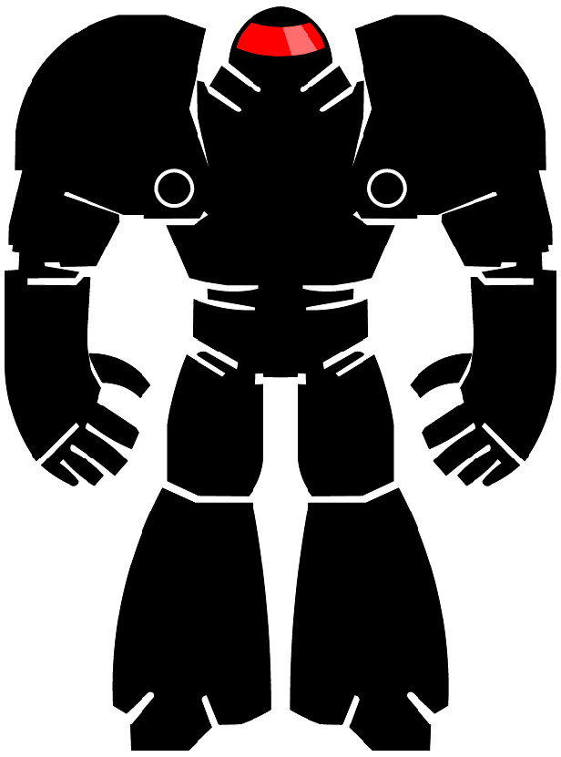
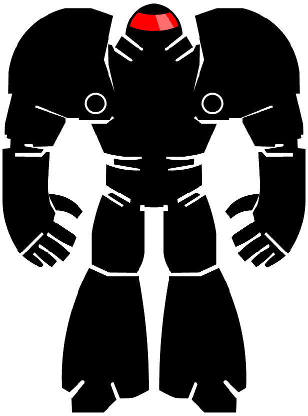
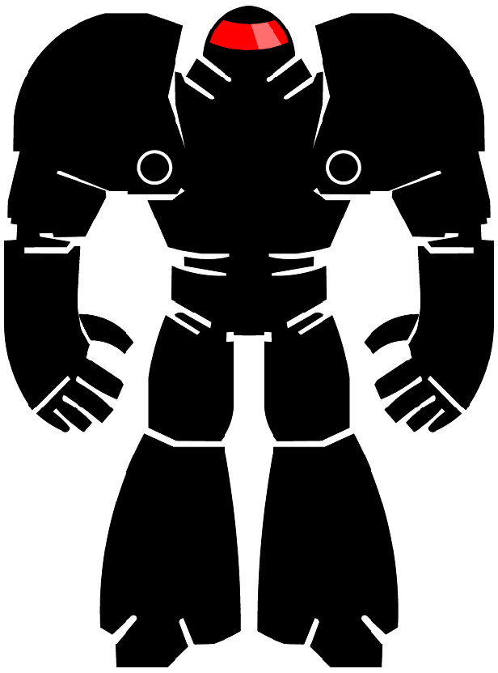

האתר הוא פרויקט לימודי ואין לעשות בו שום שימוש תפעולי או אחר מעבר למסגרת התחרות שעבורה הוא פותח. בנוסף המידע המופיע באתר אינו שלם או מלא, אין לייחס לו כל מעמד או חשיבות ואינו נוסח מחייב של החוק
נקודת התחלה
יעד הנסיעה
גובה המשאית במטרים
חפש
שרטט מסלול
ניקוי המפה

 


 
